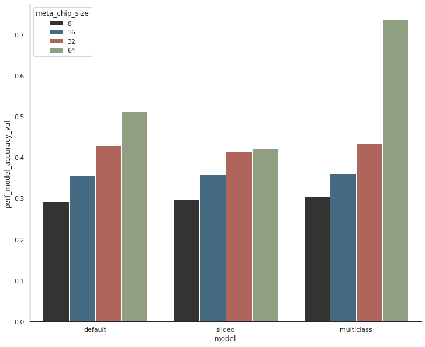
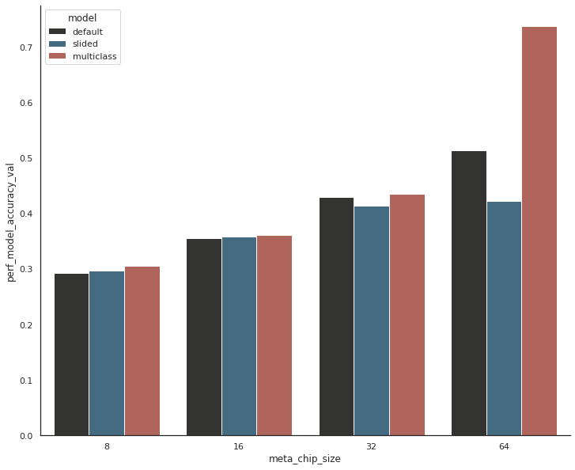
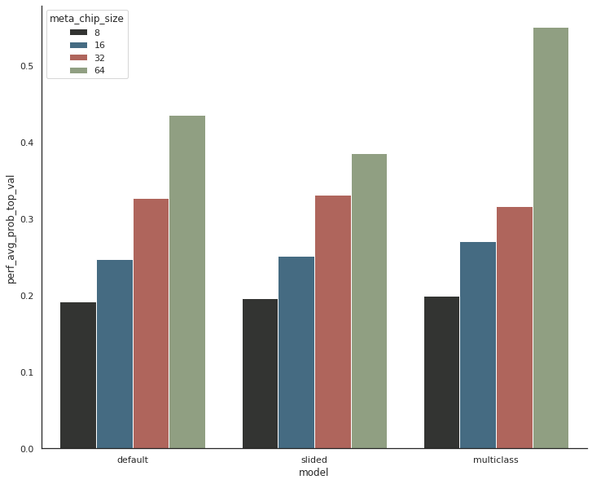
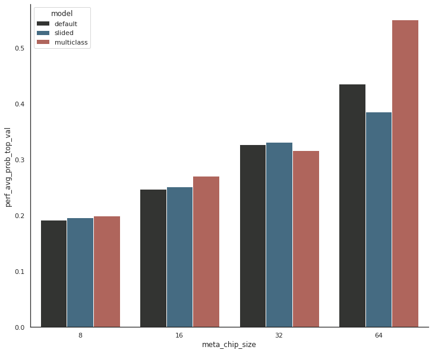
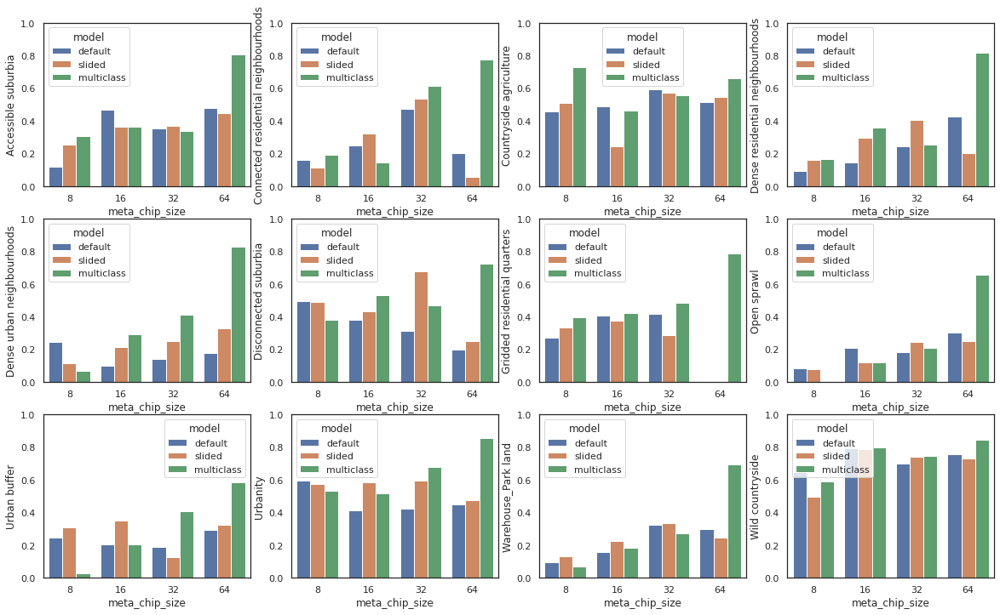
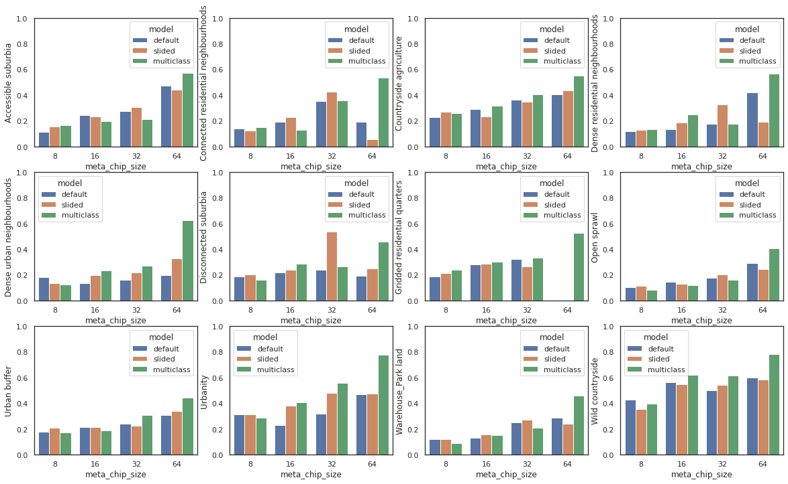
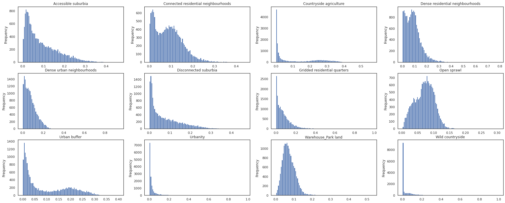

Exploration of trained neural networks¶
overall accuracy by model
average top probability by model
confusion matrices
within class accuracy
wihtin class avg top probability
distributions of probabilities per class
multiclass - distribution of sum of probabilities per chip
import json
import pandas
import numpy
import seaborn as sns
import matplotlib.pyplot as plt
from glob import glob
from itertools import product
import urbangrammar_graphics as ugg
sns.set_style('white')
path = "../../ai/"
models = glob(path + "*")
models
['../../ai/gb_8_multiclass',
'../../ai/gb_8',
'../../ai/gb_64',
'../../ai/gb_16',
'../../ai/gb_32',
'../../ai/gb_8_shuffled',
'../../ai/gb_64_shuffled',
'../../ai/gb_32_multiclass',
'../../ai/gb_16_multiclass',
'../../ai/gb_64_multiclass',
'../../ai/gb_16_shuffled',
'../../ai/gb_32_shuffled']
cols = ['model', 'meta_chip_size', 'perf_model_accuracy_train', 'perf_avg_prob_top_train', 'perf_model_accuracy_val', 'perf_avg_prob_top_val']
results = pandas.DataFrame(columns=cols)
for model in models:
with open(glob(model + "/json/*.json")[0], 'r') as f:
r = json.load(f)
if "multiclass" in model:
m = "multiclass"
elif "shuffled" in model:
m = "slided"
else:
m = "default"
results.loc[model[9:]] = [m] + [
r[c] for c in cols[1:]
]
results['model'] = pandas.Categorical(results['model'], categories=["default", "slided", "multiclass"], ordered=True)
results
| model | meta_chip_size | perf_model_accuracy_train | perf_avg_prob_top_train | perf_model_accuracy_val | perf_avg_prob_top_val | |
|---|---|---|---|---|---|---|
| gb_8_multiclass | multiclass | 8 | 0.315847 | 0.204467 | 0.305411 | 0.199193 |
| gb_8 | default | 8 | 0.288741 | 0.190248 | 0.293273 | 0.192097 |
| gb_64 | default | 64 | 0.567528 | 0.469644 | 0.513429 | 0.435189 |
| gb_16 | default | 16 | 0.368673 | 0.254693 | 0.355838 | 0.247009 |
| gb_32 | default | 32 | 0.480403 | 0.363844 | 0.429497 | 0.327276 |
| gb_8_shuffled | slided | 8 | 0.301719 | 0.197889 | 0.297283 | 0.196153 |
| gb_64_shuffled | slided | 64 | 0.739600 | 0.685450 | 0.422244 | 0.385928 |
| gb_32_multiclass | multiclass | 32 | 0.499721 | 0.354392 | 0.435494 | 0.316472 |
| gb_16_multiclass | multiclass | 16 | 0.440343 | 0.314082 | 0.361119 | 0.270722 |
| gb_64_multiclass | multiclass | 64 | 0.838068 | 0.637506 | 0.738018 | 0.550745 |
| gb_16_shuffled | slided | 16 | 0.373142 | 0.260644 | 0.358395 | 0.251618 |
| gb_32_shuffled | slided | 32 | 0.506931 | 0.399509 | 0.413789 | 0.331270 |
ugg.COLORS
[(0.19921875, 0.203125, 0.1953125),
(0.23046875, 0.4296875, 0.55078125),
(0.73828125, 0.35546875, 0.30859375),
(0.5625, 0.640625, 0.4921875),
(0.9375, 0.78125, 0.34375),
(0.58203125, 0.3984375, 0.4296875)]
## overall accuracy by model
fig, ax = plt.subplots(figsize=(12, 10))
sns.barplot(data=results, x='model', y='perf_model_accuracy_val', hue="meta_chip_size", palette=ugg.COLORS)
sns.despine()
plt.savefig("figs/per_accuracy.png")

fig, ax = plt.subplots(figsize=(12, 10))
sns.barplot(data=results, x='meta_chip_size', y='perf_model_accuracy_val', hue="model", palette=ugg.COLORS)
sns.despine()
plt.savefig("figs/per_accuracy_by_size.png")

## average top probability by model
fig, ax = plt.subplots(figsize=(12, 10))
sns.barplot(data=results, x='model', y='perf_avg_prob_top_val', hue="meta_chip_size", palette=ugg.COLORS)
sns.despine()
plt.savefig("figs/per_prob.png")

fig, ax = plt.subplots(figsize=(12, 10))
sns.barplot(data=results, x='meta_chip_size', y='perf_avg_prob_top_val', hue="model", palette=ugg.COLORS)
sns.despine()
plt.savefig("figs/per_prob_by_size.png")

Average top probability vs accuracy
sns.scatterplot(data=results, x='perf_avg_prob_top_val', y='perf_model_accuracy_val', hue='model', style="meta_chip_size")
<AxesSubplot:xlabel='perf_avg_prob_top_val', ylabel='perf_model_accuracy_val'>
for e, cl in enumerate(sorted(r['meta_class_names'])):
print(e, cl)
0 Accessible suburbia
1 Connected residential neighbourhoods
2 Countryside agriculture
3 Dense residential neighbourhoods
4 Dense urban neighbourhoods
5 Disconnected suburbia
6 Gridded residential quarters
7 Open sprawl
8 Urban buffer
9 Urbanity
10 Warehouse_Park land
11 Wild countryside
Confusion matrices¶
fig, axs = plt.subplots(4, 3, figsize=(20, 25), sharex=True, sharey=True)
order = numpy.array([9, 4, 3, 1, 6, 0, 5, 7, 10, 8, 2, 11], dtype=int)
for model in models:
if "8" in model:
row = 0
elif "16" in model:
row = 1
elif "32" in model:
row = 2
else:
row = 3
if "shuffled" in model:
col = 1
elif "multi" in model:
col = 2
else:
col = 0
with open(glob(model + "/json/*.json")[0], 'r') as f:
r = json.load(f)
a = pandas.DataFrame((r['perf_confusion_val'])).iloc[order, order].values
a = a / a.sum(axis=1)[:, numpy.newaxis]
im = axs[row, col].imshow(a, cmap="viridis", vmin=0, vmax=1)
for k, j in product(range(12), range(12)):
axs[row, col].text(j, k, "{:.2f}".format(a[k, j]),
ha="center", va="center", color="w", size=6)
axs[row, col].tick_params('x', labelrotation=90)
ticks = numpy.array(sorted(r['meta_class_names']))[order]
plt.setp(axs, xticks=range(12), yticks=range(12), xticklabels=ticks, yticklabels=ticks)
fig.colorbar(im, ax=axs.ravel().tolist(), shrink=.5)
plt.savefig('figs/confusions.png', bbox_inches='tight')
/tmp/ipykernel_54985/1677395836.py:21: RuntimeWarning: invalid value encountered in true_divide a = a / a.sum(axis=1)[:, numpy.newaxis]
sns.set_style('white')
fig, ax = plt.subplots(figsize=(12, 12))
order = numpy.array([9, 4, 3, 1, 6, 0, 5, 7, 10, 8, 2, 11], dtype=int)
with open(glob("../../ai/gb_32_multiclass" + "/json/*.json")[0], 'r') as f:
r = json.load(f)
a = pandas.DataFrame(r['perf_confusion_secret']).iloc[order, order].values
a = a / (a.sum(axis=1)[:, numpy.newaxis] + .0000001)
im = ax.imshow(a, cmap="viridis", vmin=0, vmax=1)
for k, j in product(range(12), range(12)):
ax.text(j, k, "{:.2f}".format(a[k, j]),
ha="center", va="center", color="w")
ticks = numpy.array(sorted(r['meta_class_names']))[order]
plt.xticks(range(12),ticks, rotation=90)
plt.yticks(range(12),ticks)
([<matplotlib.axis.YTick at 0x7fcb54da3be0>,
<matplotlib.axis.YTick at 0x7fcb54da3460>,
<matplotlib.axis.YTick at 0x7fcb56e84700>,
<matplotlib.axis.YTick at 0x7fcb54c7fcd0>,
<matplotlib.axis.YTick at 0x7fcb54c79610>,
<matplotlib.axis.YTick at 0x7fcb54c6b970>,
<matplotlib.axis.YTick at 0x7fcb54c83760>,
<matplotlib.axis.YTick at 0x7fcb54c83eb0>,
<matplotlib.axis.YTick at 0x7fcb54c88640>,
<matplotlib.axis.YTick at 0x7fcb54c88d90>,
<matplotlib.axis.YTick at 0x7fcb54c88970>,
<matplotlib.axis.YTick at 0x7fcb54c83730>],
[Text(0, 0, 'Urbanity'),
Text(0, 1, 'Dense urban neighbourhoods'),
Text(0, 2, 'Dense residential neighbourhoods'),
Text(0, 3, 'Connected residential neighbourhoods'),
Text(0, 4, 'Gridded residential quarters'),
Text(0, 5, 'Accessible suburbia'),
Text(0, 6, 'Disconnected suburbia'),
Text(0, 7, 'Open sprawl'),
Text(0, 8, 'Warehouse_Park land'),
Text(0, 9, 'Urban buffer'),
Text(0, 10, 'Countryside agriculture'),
Text(0, 11, 'Wild countryside')])
Within class accuracy¶
cols = ['model', 'meta_chip_size'] + sorted(r['meta_class_names'])
wc_accuracy = pandas.DataFrame(columns=cols)
for model in models:
with open(glob(model + "/json/*.json")[0], 'r') as f:
r = json.load(f)
if "multiclass" in model:
m = "multiclass"
elif "shuffled" in model:
m = "slided"
else:
m = "default"
wc_accuracy.loc[model[9:]] = [m, r['meta_chip_size']] + r['perf_within_class_accuracy_val']
wc_accuracy['model'] = pandas.Categorical(wc_accuracy['model'], categories=["default", "slided", "multiclass"], ordered=True)
wc_accuracy
| model | meta_chip_size | Accessible suburbia | Connected residential neighbourhoods | Countryside agriculture | Dense residential neighbourhoods | Dense urban neighbourhoods | Disconnected suburbia | Gridded residential quarters | Open sprawl | Urban buffer | Urbanity | Warehouse_Park land | Wild countryside | |
|---|---|---|---|---|---|---|---|---|---|---|---|---|---|---|
| gb_8_multiclass | multiclass | 8 | 0.308699 | 0.190781 | 0.727232 | 0.166667 | 0.070328 | 0.378846 | 0.394604 | 0.005319 | 0.029426 | 0.533008 | 0.068804 | 0.588198 |
| gb_8 | default | 8 | 0.120800 | 0.158800 | 0.457200 | 0.092800 | 0.245600 | 0.496800 | 0.273296 | 0.085200 | 0.245000 | 0.598000 | 0.094200 | 0.648200 |
| gb_64 | default | 64 | 0.480000 | 0.200000 | 0.513200 | 0.428571 | 0.178571 | 0.200000 | 0.000000 | 0.302752 | 0.294200 | 0.450000 | 0.297980 | 0.755400 |
| gb_16 | default | 16 | 0.469000 | 0.249815 | 0.491000 | 0.143476 | 0.096812 | 0.382925 | 0.405229 | 0.209800 | 0.202600 | 0.411181 | 0.156200 | 0.794000 |
| gb_32 | default | 32 | 0.353591 | 0.472727 | 0.592000 | 0.246212 | 0.140078 | 0.314815 | 0.418182 | 0.184286 | 0.191600 | 0.422857 | 0.322924 | 0.700000 |
| gb_8_shuffled | slided | 8 | 0.256000 | 0.114000 | 0.508400 | 0.159800 | 0.113600 | 0.490400 | 0.332200 | 0.079200 | 0.310800 | 0.577400 | 0.131000 | 0.494600 |
| gb_64_shuffled | slided | 64 | 0.445702 | 0.057143 | 0.545600 | 0.200000 | 0.329066 | 0.250000 | 0.000000 | 0.252200 | 0.326000 | 0.476476 | 0.246000 | 0.732800 |
| gb_32_multiclass | multiclass | 32 | 0.340009 | 0.612177 | 0.557045 | 0.254578 | 0.409987 | 0.467851 | 0.484685 | 0.209699 | 0.406838 | 0.680000 | 0.270248 | 0.749288 |
| gb_16_multiclass | multiclass | 16 | 0.361702 | 0.147139 | 0.460736 | 0.357702 | 0.291581 | 0.534066 | 0.423154 | 0.118982 | 0.207139 | 0.517451 | 0.184006 | 0.800000 |
| gb_64_multiclass | multiclass | 64 | 0.807492 | 0.777922 | 0.662219 | 0.818676 | 0.831131 | 0.725773 | 0.787986 | 0.657525 | 0.586236 | 0.854430 | 0.694418 | 0.848441 |
| gb_16_shuffled | slided | 16 | 0.366000 | 0.321094 | 0.246000 | 0.296000 | 0.214600 | 0.433570 | 0.373091 | 0.118000 | 0.352800 | 0.587315 | 0.227800 | 0.790800 |
| gb_32_shuffled | slided | 32 | 0.370600 | 0.535433 | 0.574800 | 0.408269 | 0.252423 | 0.679389 | 0.287938 | 0.245400 | 0.129200 | 0.593750 | 0.333600 | 0.743000 |
fig, axs = plt.subplots(3, 4, figsize=(20, 12))
for ax, col in zip(axs.flatten(), wc_accuracy.columns[2:]):
sns.barplot(data=wc_accuracy, x='meta_chip_size', hue='model', y=col, ax=ax)
ax.set_ylim(0, 1)

Within class avg top probability¶
cols = ['model', 'meta_chip_size'] + sorted(r['meta_class_names'])
avg_prob = pandas.DataFrame(columns=cols)
for model in models:
with open(glob(model + "/json/*.json")[0], 'r') as f:
r = json.load(f)
if "multiclass" in model:
m = "multiclass"
elif "shuffled" in model:
m = "slided"
else:
m = "default"
avg_prob.loc[model[9:]] = [m, r['meta_chip_size']] + r['perf_within_class_avg_prob_top_val']
avg_prob['model'] = pandas.Categorical(avg_prob['model'], categories=["default", "slided", "multiclass"], ordered=True)
avg_prob["Gridded residential quarters"] = avg_prob["Gridded residential quarters"].fillna(0)
avg_prob
| model | meta_chip_size | Accessible suburbia | Connected residential neighbourhoods | Countryside agriculture | Dense residential neighbourhoods | Dense urban neighbourhoods | Disconnected suburbia | Gridded residential quarters | Open sprawl | Urban buffer | Urbanity | Warehouse_Park land | Wild countryside | |
|---|---|---|---|---|---|---|---|---|---|---|---|---|---|---|
| gb_8_multiclass | multiclass | 8 | 0.168503 | 0.147969 | 0.258929 | 0.136705 | 0.123033 | 0.163590 | 0.240695 | 0.085466 | 0.175560 | 0.290268 | 0.092448 | 0.399493 |
| gb_8 | default | 8 | 0.113395 | 0.137579 | 0.226941 | 0.120526 | 0.182241 | 0.187607 | 0.186742 | 0.105326 | 0.180808 | 0.314428 | 0.119342 | 0.429317 |
| gb_64 | default | 64 | 0.475017 | 0.192649 | 0.406655 | 0.420018 | 0.195911 | 0.194697 | 0.003535 | 0.292815 | 0.310662 | 0.468320 | 0.289856 | 0.602081 |
| gb_16 | default | 16 | 0.241875 | 0.191005 | 0.291244 | 0.134265 | 0.134791 | 0.216931 | 0.282975 | 0.148057 | 0.216279 | 0.230750 | 0.133307 | 0.564867 |
| gb_32 | default | 32 | 0.275395 | 0.353204 | 0.366118 | 0.176142 | 0.159998 | 0.239833 | 0.324158 | 0.175554 | 0.238788 | 0.317560 | 0.253565 | 0.503108 |
| gb_8_shuffled | slided | 8 | 0.153388 | 0.126484 | 0.272700 | 0.130254 | 0.136149 | 0.201637 | 0.215469 | 0.115367 | 0.210639 | 0.316599 | 0.121538 | 0.353607 |
| gb_64_shuffled | slided | 64 | 0.443730 | 0.054517 | 0.434726 | 0.191138 | 0.329020 | 0.249997 | 0.000000 | 0.247418 | 0.338947 | 0.474311 | 0.240826 | 0.587310 |
| gb_32_multiclass | multiclass | 32 | 0.214496 | 0.358172 | 0.403950 | 0.178573 | 0.272646 | 0.268607 | 0.331460 | 0.164295 | 0.307558 | 0.557502 | 0.209292 | 0.616979 |
| gb_16_multiclass | multiclass | 16 | 0.199081 | 0.128123 | 0.319330 | 0.247173 | 0.236026 | 0.287505 | 0.301686 | 0.119045 | 0.188537 | 0.409874 | 0.152945 | 0.621500 |
| gb_64_multiclass | multiclass | 64 | 0.574463 | 0.536827 | 0.553145 | 0.568477 | 0.625051 | 0.460006 | 0.526348 | 0.405437 | 0.443105 | 0.778360 | 0.459681 | 0.784908 |
| gb_16_shuffled | slided | 16 | 0.234428 | 0.227098 | 0.233090 | 0.186516 | 0.196507 | 0.240473 | 0.288393 | 0.129785 | 0.213950 | 0.379953 | 0.159225 | 0.550162 |
| gb_32_shuffled | slided | 32 | 0.304498 | 0.426911 | 0.348620 | 0.327533 | 0.216997 | 0.536367 | 0.267614 | 0.202636 | 0.226104 | 0.480682 | 0.272285 | 0.544763 |
fig, axs = plt.subplots(3, 4, figsize=(20, 12))
for ax, col in zip(axs.flatten(), wc_accuracy.columns[2:]):
sns.barplot(data=avg_prob, x='meta_chip_size', hue='model', y=col, ax=ax)
ax.set_ylim(0, 1)

probability exploration¶
y_pred_probs = numpy.load(glob("../../ai/gb_8_multiclass" + "/pred/*_val.npy")[0])
pandas.Series(y_pred_probs.sum(axis=1)).plot.hist(bins=100)
<AxesSubplot:ylabel='Frequency'>
fig, axs = plt.subplots(3, 4, figsize=(30, 12))
for i, (n, ax) in enumerate(zip(sorted(r['meta_class_names']), axs.flatten())):
pandas.Series(y_pred_probs[:, i]).plot.hist(bins=100, ax=ax)
ax.set_title(n)
